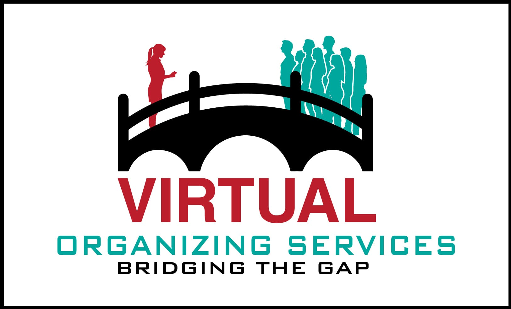

Virtual Organizing…is it right for you?

Professional organizers have the ability to put the balance back into people’s lives. Sustained by collaboration and growth, virtual organizing is another option to having a professional organizer work with you in your home. While this is not a new concept, it may be the first time you’ve heard of it. Some reasons to consider this approach to getting your space in shape are…
- There may not be a professional organizer in your area
- You are a DIY’er that is looking for a little coaching
- Your busy schedule only allows for a small amount of time to dedicate to organizing. Scheduled at your convenience, 1 – 2 hour sessions, over a period of time.
- Savings in cost vs. hiring an on-site professional organizer
- Accountability with designated homework between sessions
- Improved long-term supportive habits
- Could enlist a family member or friend to help during sessions
- Focus on one area of the home
You would be a fit for this style of organizing assistance if you
- Agree to work together with the organizer as a team
- Are motivated for change
- Have a willingness to learn new skills
- Have the physical ability to lift and move items
- Don’t mind dropping off donations to a local charity and discarding the eliminated recycle and trash
- Can articulate when you become frustrated or stuck during the process
- Have time restraints
How does virtual organizing work?
- A complimentary 20 minute assessment by phone is done to determine if this approach is right for you
- Goals are defined in a timeline agreement set between the two of us
- Expectations are defined which clearly illustrates the accountability held by each
- As we proceed, a continuing project session journal serves as a living reference for both of us to reflect upon. Its purpose is to record our problem solving and suggested ideas
- Through our interactive experience, the professional organizer will provide detailed and precise descriptions as well as suggestions to ensure that the ideas are clearly understood
- Realistic homework will be assigned between sessions in order to make advancement
Based on your level of technology, you may need
- Skype account, email address, ability to scan documents, optional ways to share information via Google Drive
- Cell phone and the knowledge of how to take and forward pictures
- Ability to simply sketch an overhead view of the working area
- Tape measure
- Pad of paper to list new ideas and storage needs as they are defined
Whether you are local or miles away, I look forward to finding ways to assist you with your organizing project. Please click on the Virtual Organizing logo below to contact me. I’d be happy to give you a call at your convenience so that we can get acquainted and decide if virtual organizing is a match for you.
Wendy C. Quaccia